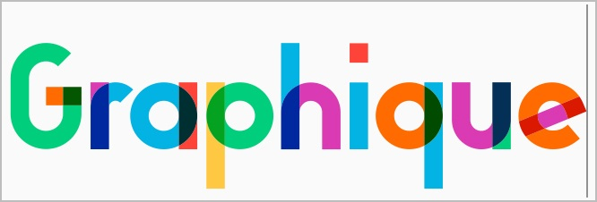

Everything you need to create beautiful designs.
Whether you're working on a design for a poster, a webpage, or a blockbuster app, you'll make your ideas come to life in Pixelmator Pro. With smart spacing guides, advanced alignment tools, and blazing fast performance, you can harness the full power of layer-based editing.

Layer-Based Editing
Use simple buildings blocks - shape, text, video, and image layers - to create stunning compositors and designs.Add layers in delightfully quick and simple ways, such as by dragging and dropping them straight into Pixelmator Pro, or using built-in Photo Browser.

Smart Guides
The Arrange tool makes it incredibly easy to create designs.It lets you automatically select layers by clicking them on the canvas, intelligently snaps layers into position as you move them around, and even lets you align and distribute layers automatically


Layer Styles
Nondestructively customize the look of any layer in your image by adding fills, strokes, and shadows, or any combination of multiple styles.And with presets, you can save your favorite combinations, use them in any of your images, and even share them with others.
Image editing powered by machine learning.
To deliver more intelligent image editing, Pixelmator Pro uses machine learning - a technology that allows computers to gain knowledge to perform specific tasks more like a person than a computer.Wich enabled us to create features that have never before been possible.

ML Enhance
Automatically enhance photos like a pro photographer.

Super Resolution
Magically Increase the resolution of images while preserving sharpness And details.

Match Colora
Quick and easily match the colors and style of any photo.

Denoise
Effortessly remove camera noise and image compression artifacts from photos.

Quick Selection Tool
Quick make accurate selections ease.

Crop
Improve the composition of photos with just a click.

Remove Background
Remove the background formats any image with just a click.

Select Subject
Automatically select the subjects of images with ease.

Select and Mask Tool
Easily make advanced selections of challenging image areas like hair or fur.
Magically get rid of unwanted objects.
Make small imperfections or even entire objects disappear from your images by paiting over them with the Repair Tool.No matter how complex the background, the Repair Tool can make almost any object vanish without a trace.
Easily design great-looking text.
Using the powerful Type tools in Pixelmator Pro, you can easily design great-looking text in all your images.Effortlessly create curved text or type along shapes and paths.And use a full set of typography tools to customize text in any way you can imagine.
Type on a path
Pixelmator Pro includes a range of intuitive and easy-to-use tools for designing curved and circular text. Use the Circular Type tool to create circular text, the Path Type tool to create path text, or type text around the edges of any default or even custom shape.
Typography features
Customize font face, size, and color, adjust emphasis, customize alignment, perfect spacing, add subscript and superscript text, take advantatge of advanced typography features such as ligatures, glyphs, and more.
SVG Fonts
Use multicolored or even textured SVG fonts in your designs.
